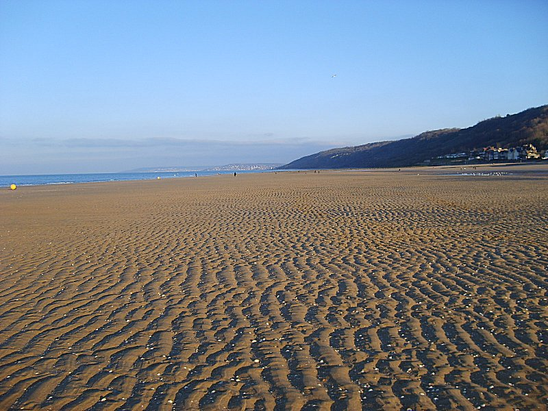
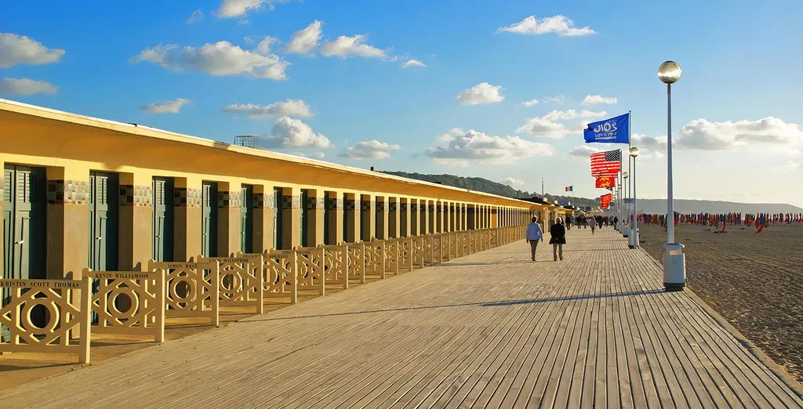
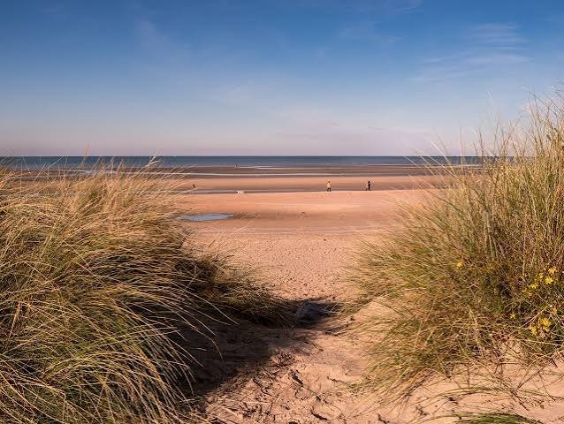
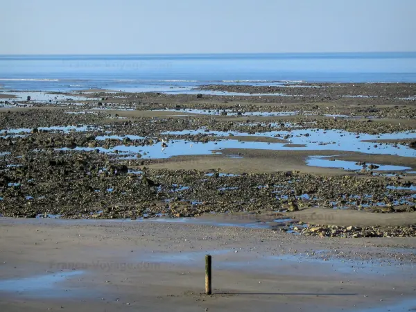
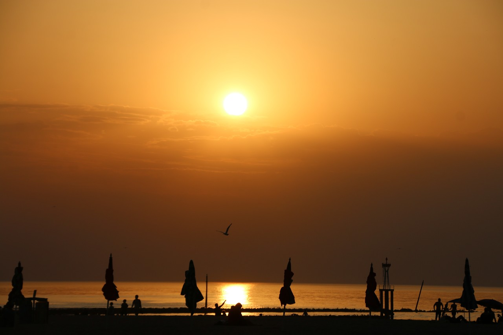

Des paysages variés

Les planches et promenades

Les dunes

Les falaises

À marée basse

La Côte Fleurie offre de nombreuses façons de profiter du bord de mer. Promenade sur la plage, balade le long des digues ou simplement pause face à l’horizon : le littoral accompagne les découvertes tout au long de la côte.




